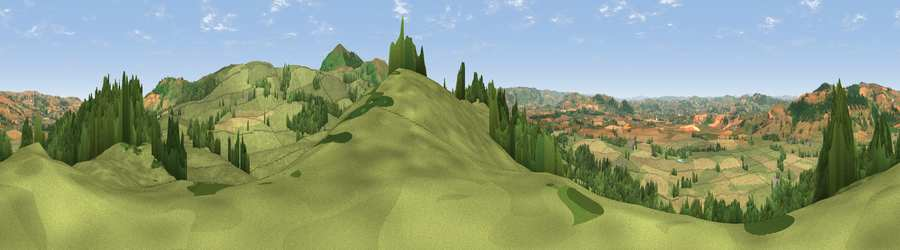

Viewpoint near Priest Weston
#6208 in England · top 21% of its area beats it · near Priest Weston · access?Where it is
The exact computed spot (SO 28275 99312). Click the marker for map links.
Public access: no public right of way or access land is recorded at this exact spot — it may be on private land. Computed from Natural England's CRoW access layer and OpenStreetMap rights of way — not the legal definitive map. Always verify locally.
The view, rendered

A 360° render of this exact spot computed from the terrain model, tree cover and land cover — summer colours, afternoon light, calibrated against photographs of famous viewpoints. Real trees, hedges and buildings will differ in detail.
The panorama
Grey silhouette: terrain skyline in each direction (720 bearings, Earth curvature and refraction included). Dashed green: skyline with trees (+15 m) and buildings (+8 m) as obstacles. Blue strip: how far the ground is visible on each bearing.
Where the view opens
Wedge length = distance to the farthest visible ground on that bearing (vegetation-aware). Rings at 10, 25 and 50 km.
What fills the view
63% grassland · 21% woodland · 15% cropland
Angular shares of the visible panorama (visual magnitude), not map area. Landscape diversity 0.40 (0–1 Shannon).
Key numbers
More beautiful places nearby
The staircase of upgrades: each row has a higher view potential than everything closer. Driving times are estimates from straight-line distance, calibrated against real road routing — check an actual route before setting out.
| Place | Direction | Drive | Score |
|---|---|---|---|
| The Knoll | SSW · 1 km | ~2 min | 69.6 |
| Viewpoint near Priest Weston | E · 2 km | ~6 min | 71.6 |
| Stapeley Hill | E · 3 km | ~7 min | 74.9 |
| Bromlow Callow | ENE · 5 km | ~10 min | 76.8 |
| Viewpoint near Lydham | SE · 7 km | ~15 min | 78.6 |
| Viewpoint near Stiperstones | E · 10 km | ~19 min | 82.0 |
| Earl's Hill | ENE · 14 km | ~25 min | 82.2 |
| Viewpoint near Halfway House | N · 14 km | ~26 min | 83.3 |
52.58687, -3.06010 · source: screening · position refined by local search. Computed location — check access rights before visiting.